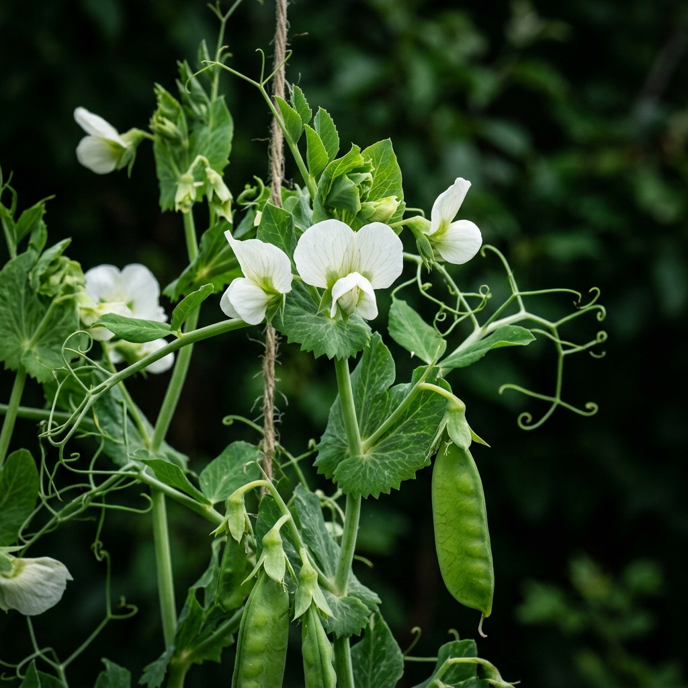
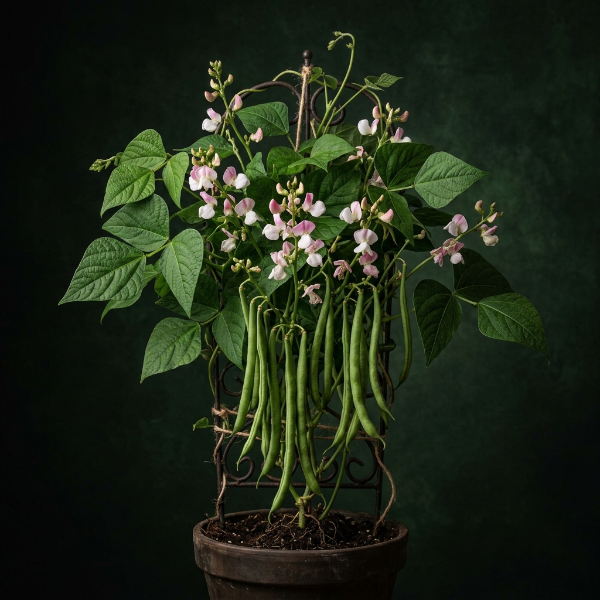
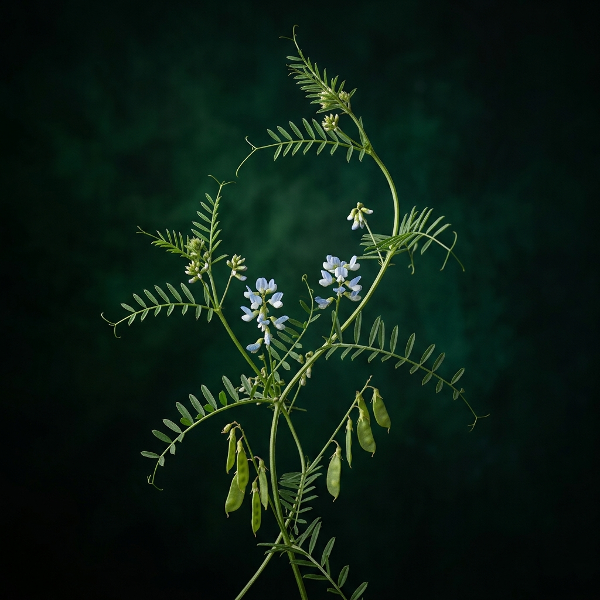
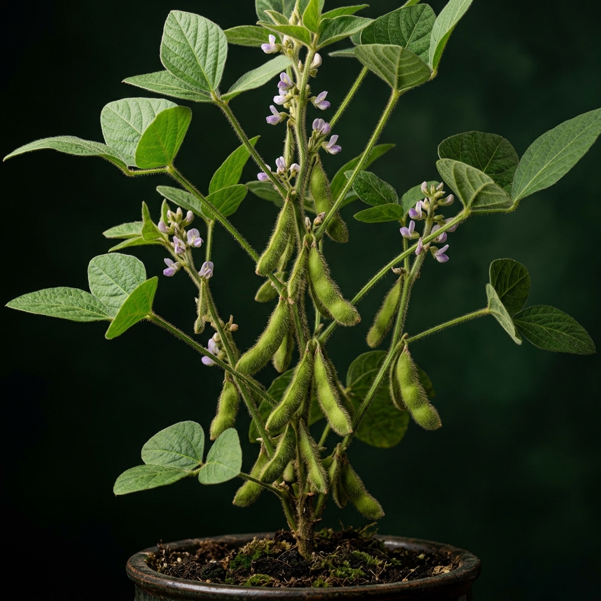

Pro procházení prezentace použijte šipky na klávesnici, postranní tlačítka, nebo kolečko myši.
Vítejte v interaktivním muzeu jedné z nejvýznamnějších čeledí rostlin.
Květ vzhledem připomíná motýla. Skládá se z pavézy (horní velký lístek lákající hmyz), dvou postranních křídel a ze srostlého člunku. Ve člunku se schovávají tyčinky a pestík chráněné před nepřízní vlivů.
Charakteristický suchý plod, který po dozrání obvykle puká nadvakrát. Uvnitř se nacházejí cenná semena (luštěniny), která v sobě nesou vysoký obsah pro člověka velmi důležitých bílkovin.
Rostliny tvoří dokonalou symbiózu s hlízkovitými bakteriemi (rod Rhizobium) žijícími na kořenech. Ty umí jako jedny z mála vázat volný dusík ze vzduchu, čímž půdu přirozeně hnojí a obohacují.
Listy bývají obvykle složené (zpeřené či trojčetné). Pro popínavé druhy teto čeledi (například hrách) je typické, že se koncové lístky přeměňují v úponky, kterými se rostlina inteligentně zachytává opory.



